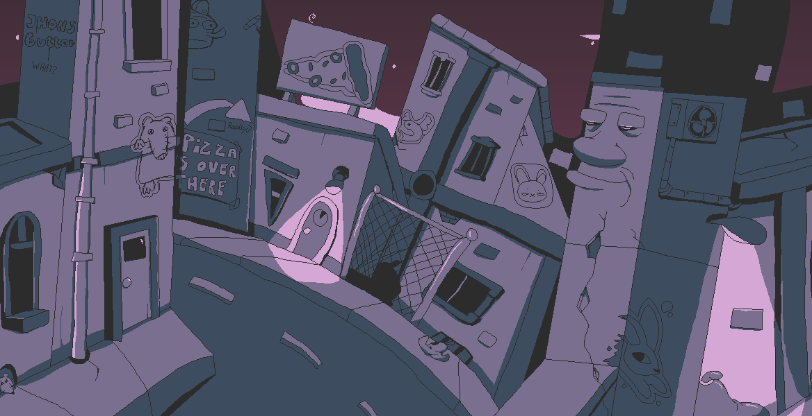
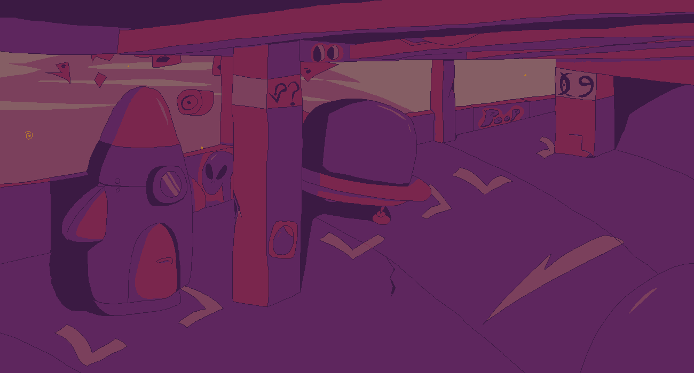
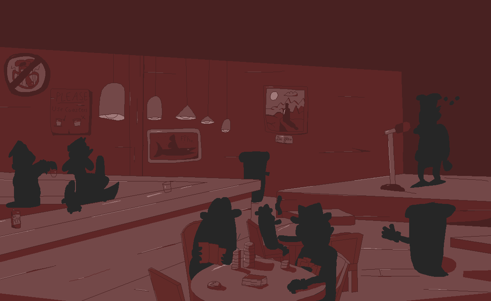
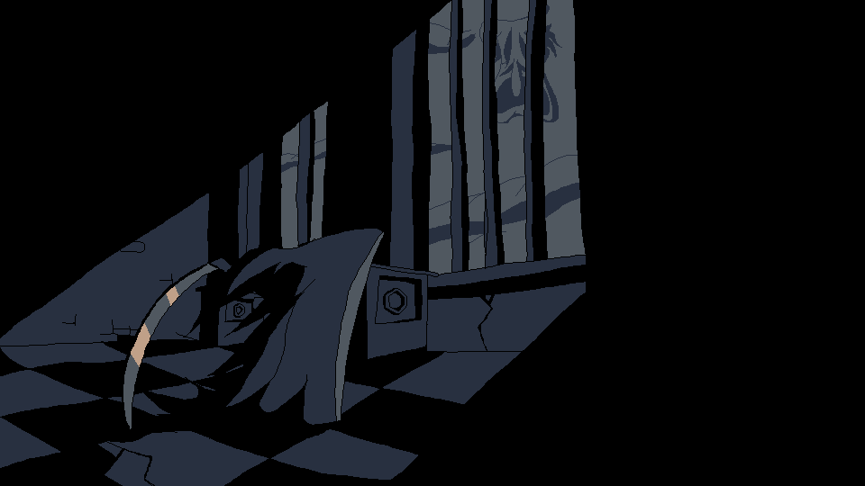

Hallo! Ik ben Kirsten. Ik speel graag videogames zoals Deltarune en Pizza Tower.
Ik studeer momenteel IT & Software op AP maar Dit is niet mijn eerste keer op deze campus, aangezien ik in het middelbaar hier al wat vakken heb gevolgdt. Een van deze vakken was dit zelfde vak, ook gebracht de geweldige mr. De Vos.



